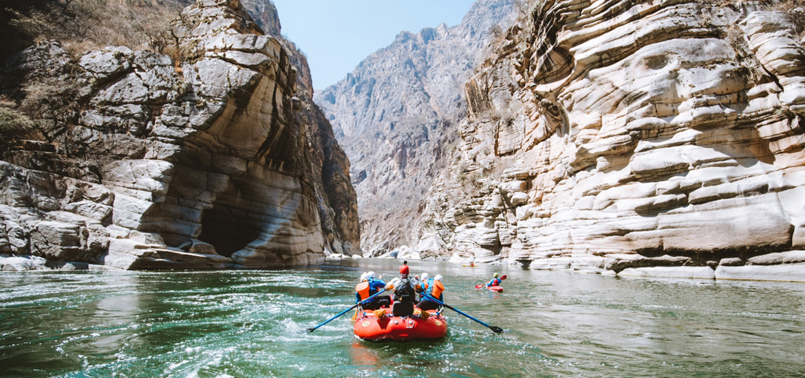
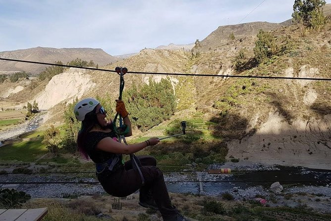

2. Aventura y Deportes Extremos
El Valle del Colca es un paraíso oculto donde la naturaleza se convierte en el escenario perfecto para una
aventura extrema sin igual. Imagina sentir la adrenalina recorrer tu cuerpo mientras desciendes por el río
Colca, cuyas aguas turbulentas te desafían a cada remolino. O volar por encima de los impresionantes Cañón es
y montañas mientras te deslizas en tirolesa, experimentando la sensación de libertad al surcar los cielos
con vistas panorámicas que te cortan la respiración.
Las rutas de montaña son un campo de juego para los ciclistas más audaces. Con cada curva, cada bajada
empinada, el mountain biking en estos senderos agrestes te conecta con la tierra de una manera visceral,
desafiando tus límites mientras atraviesas paisajes que parecen sacados de otro mundo. Y si eres de los que
busca aún más acción, los circuitos de cuatrimotos te llevan a explorar terrenos inexplorados, donde la
velocidad se convierte en el motor de tu aventura a través de paisajes rocosos y caminos remotos.
El Valle del Colca no es solo un destino; es una invitación a vivir al límite. Su imponente geografía, con
sus montañas escarpadas, Cañón es profundos, ríos indomables y paisajes sobrecogedores, te invita a
sumergirte en una experiencia de adrenalina pura. Aquí, cada rincón te reta, cada giro de la ruta te impulsa
a ir más allá.
Dentor de los deporte mas llamaticos estan:
a. kayak
El kayak en el Valle del Colca es una experiencia única que combina adrenalina, aventura y la belleza natural
de este impresionante lugar. El río Colca, con sus aguas rápidas y desafiantes, es el escenario perfecto
para los amantes de los deportes acuáticos. Este río fluye a través de Cañón es profundos, rodeado de
formaciones rocosas y paisajes espectaculares, ofreciendo un ambiente ideal para practicar kayak.

Aguas Rápidas del Río Colca: El Terreno Perfecto para el Kayak
El río Colca tiene secciones con rápidos de clase II a clase IV, lo que lo convierte en un destino excelente
tanto para principiantes como para kayakers experimentados. Las aguas rápidas crean una serie de desafíos
emocionantes, con rápidos que exigen técnica, concentración y agilidad para navegar de manera segura. Estos
rápidos son perfectos para disfrutar de la adrenalina y al mismo tiempo contemplar la majestuosidad del
paisaje que te rodea.
Las secciones más calmadas del río también permiten momentos de relajación y disfrute, donde puedes remar
tranquilamente y apreciar las vistas impresionantes de los Cañón es y las montañas. Pero es en los rápidos,
donde las aguas se encrespan y la corriente se acelera, donde el kayak cobra todo su sentido como un deporte
extremo.
Lugares donde más se practica el kayak en el Valle del Colca
El kayak en el Valle del Colca se puede practicar principalmente en las siguientes áreas:
- Cañón del Colca: La sección del río que atraviesa el famoso Cañón del Colca es uno de
los puntos más emocionantes para los kayakers. Aquí se encuentran algunos de los rápidos más intensos de
la zona, con un paisaje que combina las formaciones rocosas del cañón y la vegetación circundante. Este
lugar es ideal para los aventureros que buscan una experiencia extrema.
- Yanque: Desde el distrito de Yanque, que es la puerta de entrada al Valle del Colca, se
organizan excursiones de kayak por las aguas más tranquilas del río. Esta área es perfecta para quienes
desean practicar el deporte de forma más relajada, mientras disfrutan de vistas panorámicas del valle.
- Canco: Esta localidad, situada cerca del cañón, es otro punto popular para los
kayakers. Aquí las aguas del río Colca se presentan con rápidos moderados, lo que la convierte en una
excelente opción para los que buscan practicar kayak en un entorno más desafiante, pero seguro.
- Sangalle: El Oasis de Sangalle, ubicado al fondo del Cañón del Colca, es otro de los
puntos destacados para la práctica de kayak. Aunque la mayoría de los viajeros accede a este lugar a
pie, algunas rutas fluviales también permiten practicar deportes acuáticos en las aguas más tranquilas
cerca del oasis, lo que crea una experiencia relajante y única en un entorno impresionante.
Consejos para Practicar Kayak en el Río Colca
- Conoce tu nivel: Antes de lanzarte a los rápidos más difíciles, asegúrate de conocer tu
nivel de habilidad. Si eres principiante, comienza con los rápidos más suaves (clase II) y ve
incrementando la dificultad a medida que adquieras confianza.
- Equipo adecuado: Es importante contar con un equipo de kayak de calidad, incluyendo un
casco, chaleco salvavidas y un remo adecuado. No subestimes la seguridad, ya que el río puede ser
impredecible y siempre es mejor estar preparado.
- Condiciones del río: Asegúrate de verificar las condiciones del río antes de salir. La
temporada de lluvias puede aumentar la intensidad de los rápidos, así que es fundamental conocer el
estado del río para ajustar el nivel de dificultad de tu aventura.
- Técnicas de remado: En los rápidos, es esencial tener una buena técnica de remado.
Aprende a usar el remo en un ángulo adecuado para maniobrar con eficacia y evitar volcarte en los
momentos más agitados.
- Guía local: Si no eres experto en kayak o si quieres vivir la experiencia de forma
segura, contratar un guía local es una excelente opción. Ellos conocen perfectamente el río, sus rápidos
y las mejores rutas, asegurando que tu aventura sea tanto emocionante como segura.
La Magia del Kayak en el Valle del Colca
Practicar kayak en el Valle del Colca no solo es una descarga de adrenalina, sino también una forma
incomparable de conectar con la naturaleza. Navegar entre las rocas, los Cañón es y las montañas mientras
experimentas la fuerza del río y la tranquilidad de sus aguas más calmadas te permite disfrutar del paisaje
de una manera que pocos otros deportes pueden ofrecer. Sin duda, el kayak en el Colca es una experiencia que
todo amante de la aventura debe probar.
b. Un Terreno Perfecto para el Ciclismo de Montaña
El ciclismo de montaña en el Valle del Colca es una de las experiencias más emocionantes y desafiantes que
puedes vivir en este impresionante rincón del sur de Perú. Con su terreno accidentado, montañas imponentes,
valles profundos y caminos rurales, este destino ofrece algunas de las rutas más espectaculares para los
ciclistas de aventura que buscan combinar naturaleza, emoción y ejercicio físico.
El Valle del Colca es una zona montañosa con una topografía variada, lo que la convierte en un campo de juego
ideal para el mountain biking. Aquí encontrarás rutas que van desde caminos de tierra planos hasta senderos
empinados, pasando por valles estrechos, acantilados y pueblos tradicionales. Cada ruta ofrece un desafío
diferente, lo que permite a los ciclistas explorar la región mientras disfrutan de una experiencia única en
contacto directo con la naturaleza.
El clima en el valle, con sus días soleados y frescos, proporciona el ambiente ideal para recorrer largas
distancias sobre dos ruedas. Las temperaturas varían según la altitud, lo que significa que los ciclistas
pueden disfrutar de todo tipo de paisajes, desde el cálido clima de los pueblos cercanos hasta las zonas más
frías y alpinas en las alturas de los volcanes.
Las rutas en el Valle del Colca son perfectas para aquellos que buscan emociones fuertes y paisajes
impresionantes. Algunas de las rutas más populares incluyen:
Ruta Chivay – Cabanaconde
Esta es una de las rutas más icónicas y emocionantes del valle. Desde Chivay, el camino comienza en un
terreno relativamente suave y va ascendiendo por carreteras de tierra hasta llegar a Cabanaconde, un
pintoresco pueblo que se encuentra cerca del borde del cañón. A lo largo de la ruta, los ciclistas
atraviesan terrazas agrícolas, zonas de cultivo de maíz y papas, y ofrecen vistas impresionantes del Cañón
del Colca. Este recorrido tiene un desnivel importante, lo que lo convierte en un reto físico que
recompensará a los ciclistas con panorámicas espectaculares.
Ruta hacia los Nevados
Para los ciclistas más aventureros y en busca de un verdadero reto, las rutas hacia los nevados de la zona,
como el Nevado Ampato o el Nevado Sabancaya, ofrecen una experiencia en altitudes más altas. Con caminos más
agrestes y exigentes, estas rutas llevan a los ciclistas a través de paisajes de montaña, glaciares y
paisajes desérticos. La altitud puede hacer que el ciclismo sea aún más desafiante, pero la belleza del
paisaje y la satisfacción de alcanzar las cumbres son incomparables.
Circuito de los Miradores
Existen rutas que te permiten recorrer los miradores más importantes del valle, como el Mirador de la Cruz
del Cóndor. Esta ruta no solo ofrece un reto físico moderado, sino que también regala vistas panorámicas del
cañón, donde podrás admirar el vuelo majestuoso de los cóndores andinos. El recorrido conecta varios
pueblos, lo que te da una perspectiva única de la vida rural y la arquitectura tradicional de la región.
Consejos para Practicar Mountain Biking en el Valle del Colca
- Prepara tu equipo: El ciclismo de montaña en el Valle del Colca requiere una bicicleta
resistente, especialmente si planeas recorrer rutas empinadas y caminos de tierra. Asegúrate de que tu
bicicleta esté equipada con suspensiones adecuadas, frenos de calidad y ruedas fuertes. No olvides
llevar ropa cómoda, casco, guantes y protector solar.
- Ajusta tu nivel de dificultad: Si eres principiante, es recomendable comenzar con rutas
más suaves y cortas, como el circuito hacia los miradores o una ruta que conecte algunos pueblos
cercanos. A medida que adquieras experiencia y confianza, puedes probar rutas más complejas como el
descenso hacia el Oasis de Sangalle o el ascenso hacia los nevados.
- Hidratarse es clave: Dado que muchas de las rutas de ciclismo de montaña en el Colca se
desarrollan en alturas elevadas, es importante llevar suficiente agua, especialmente en los días
calurosos. Mantente bien hidratado, ya que el ejercicio en altitud puede ser más exigente y
deshidratarte más rápidamente.
- Ten en cuenta el clima: El clima en el valle puede ser impredecible, con temperaturas
frías en las mañanas y noches, y un sol fuerte durante el día. Viste en capas para poder adaptarte a los
cambios de temperatura y lleva contigo un impermeable por si acaso.
- Disfruta de la vista: Mientras te concentras en la ruta, no olvides detenerte de vez en
cuando para admirar las espectaculares vistas del valle, los volcanes, los pueblos y los Cañón es. El
Valle del Colca es un lugar de belleza incomparable, y cada curva del camino te ofrece una nueva
perspectiva del paisaje andino.
Un Encuentro con la Naturaleza
El ciclismo de montaña en el Valle del Colca no es solo un deporte, es una manera de sumergirse profundamente
en la naturaleza y la cultura de la región. Pedaleando entre terrazas agrícolas y pueblos tradicionales,
pasando por valles escondidos y alcanzando miradores elevados, los ciclistas tienen la oportunidad de
conectar con el corazón del Valle del Colca de una forma visceral.
El desafío físico de las rutas de montaña es complementado por la increíble belleza de la región, donde cada
kilómetro recorrido te regala paisajes únicos que solo se pueden experimentar de esta forma tan activa y
cercana a la naturaleza. El Valle del Colca, con su topografía dramática, ofrece una experiencia inolvidable
para los ciclistas de montaña que buscan no solo un desafío físico, sino también una aventura épica en un
entorno inigualable.
3. La Aventura de Volar sobre el Colca
El Valle del Colca es famoso por sus enormes Cañón es y montañas, lo que crea el entorno perfecto para
practicar tirolesa. Con el viento en tu rostro, te deslizarás a través de un paisaje espectacular, donde las
vistas panorámicas de los valles, las formaciones rocosas y la vegetación exuberante te dejarán sin
palabras. Volar por encima de estos paisajes te proporciona una perspectiva única que solo puedes
experimentar desde el aire, mientras te sumerges completamente en la belleza natural de la región.
El Circuito de Tirolesa
El circuito de tirolesa en el Colca generalmente consiste en varias líneas de cables de gran longitud, que
permiten a los aventureros deslizarse de un punto alto a otro. Estos cables atraviesan valles profundos y se
extienden sobre acantilados, lo que te da la sensación de estar volando. Dependiendo del lugar y el circuito
específico, algunas de las tirolinas en el Colca pueden alcanzar altitudes de hasta 400 metros sobre el
suelo, haciendo de la experiencia una auténtica descarga de adrenalina.

¿Dónde se practica la tirolesa en el Valle del Colca?
Uno de los destinos más conocidos para practicar tirolesa en el Valle del Colca es la zona cerca de Chivay,
el principal pueblo de entrada al valle. Aquí, se han instalado plataformas y cables que permiten a los
visitantes disfrutar de la tirolesa mientras admiran las vistas panorámicas de los Cañón es y las montañas
circundantes.
En algunos casos, la tirolesa se encuentra cerca de otras actividades de aventura, como el kayak o el
mountain biking, creando paquetes de turismo de aventura que permiten a los viajeros disfrutar de varias
emociones extremas en un solo día.
Consejos para Vivir la Experiencia de la Tirolesa
- Confía en el equipo de seguridad: Antes de lanzarte, asegúrate de que el equipo de
seguridad esté en perfectas condiciones. El arnés, los cables y los cascos son esenciales para
garantizar tu seguridad, por lo que nunca dudes en preguntar al guía sobre el equipo y los
procedimientos.
- Relájate y disfruta del paisaje: La emoción del vuelo puede hacer que olvides el
impresionante paisaje que te rodea. Recuerda que, además de la adrenalina, estás siendo testigo de uno
de los panoramas más impresionantes de los Andes. Relájate, respira profundamente y disfruta de la vista
mientras vuelas.
- Vestimenta adecuada: Usa ropa cómoda y cerrada. Evita prendas sueltas que puedan
engancharse durante el vuelo. También es recomendable llevar zapatos deportivos para mayor comodidad.
- Prepara tu mente para la adrenalina: Aunque la tirolesa es completamente segura, la
idea de volar sobre un cañón profundo puede ser intimidante para algunos. Tómate tu tiempo para
relajarte, sigue las instrucciones del guía y recuerda que la experiencia es completamente controlada.
- Mejor época para disfrutarla: La tirolesa se puede disfrutar durante todo el año, pero
la temporada ideal es de mayo a septiembre, cuando el clima es más cálido y seco. Durante los meses de
lluvia, algunas áreas pueden volverse resbaladizas, así que siempre verifica las condiciones del tiempo
antes de tu aventura.
La Sensación de Volar
Lo que hace a la tirolesa en el Valle del Colca aún más especial es la mezcla de sensación de vuelo y
conexión con la naturaleza. Al deslizarte sobre el cañón, la sensación de libertad es indescriptible. El
viento acariciando tu rostro, la velocidad y la altura, junto con la imponente belleza de la región, te
proporcionan una experiencia única. Es una de esas actividades en las que el cuerpo se llena de adrenalina
y, al mismo tiempo, la mente se siente completamente en paz con la majestuosidad de la naturaleza.
Tirolesa: Una Aventura para Todos
Aunque la tirolesa es una actividad emocionante, es accesible para la mayoría de las personas. La seguridad
es la principal prioridad en estos circuitos, y los guías profesionales te acompañarán durante todo el
proceso, asegurándose de que disfrutes de la experiencia de manera segura. No importa si eres un novato o un
experimentado amante de los deportes extremos, la tirolesa en el Valle del Colca te ofrecerá una experiencia
única, llena de emoción y vistas espectaculares.
4. Paseos en cuatrimotos por circuitos remotos
El paseo en cuatrimotos por el Valle del Colca es una de las experiencias más emocionantes que puedes vivir
en esta majestuosa región. Gracias a la geografía única del lugar, con sus montañas imponentes, valles
profundos y caminos sin asfaltar, las cuatrimotos se convierten en el medio ideal para explorar a fondo este
paraíso natural, accediendo a rincones remotos que de otro modo serían difíciles de alcanzar.
La Aventura de Conquistar el Terreno
Con una cuatrimoto, el Valle del Colca se transforma en un vasto campo de aventura. Las cuatrimotos permiten
recorrer los terrenos más agrestes y empinados, atravesando caminos de tierra, terrazas agrícolas y zonas
volcánicas. A medida que avanzas, el paisaje cambia constantemente: desde las alturas, donde se disfrutan
vistas panorámicas de Cañón es, pueblos tradicionales y las cumbres nevadas de los volcanes, hasta los valles
verdes y remotos, donde la tranquilidad de la naturaleza parece envolverlo todo.
La Sensación de Libertad y Emoción
El paseo en cuatrimoto te da la oportunidad de experimentar una sensación única de libertad mientras recorres
paisajes impresionantes. El viento en tu rostro, el rugir del motor y la conexión directa con el terreno
montañoso hacen de este paseo una experiencia llena de adrenalina. Los valles y montañas del Colca son el
escenario perfecto para este tipo de aventuras, ya que permiten disfrutar de un contacto cercano con la
naturaleza y la cultura local.
Un Encuentro Íntimo con la Naturaleza
A bordo de una cuatrimoto, es posible recorrer zonas más remotas y menos transitadas del Valle del Colca,
donde la belleza del paisaje te rodea en su estado más puro. Podrás disfrutar de vistas del Cañón del Colca,
ver la vida cotidiana de los pueblos tradicionales, y adentrarte en el territorio volcánico de la zona, con
sus formaciones rocosas y su geografía volcánica única. Todo esto mientras vives una aventura que te hace
sentir parte del paisaje.
Consejos para Disfrutar del Paseo en Cuatrimoto
- Seguridad ante todo: Aunque las cuatrimotos son relativamente fáciles de manejar,
siempre es recomendable recibir una breve capacitación o indicaciones sobre el uso del vehículo,
especialmente en terrenos difíciles. Los guías locales, expertos en la zona, son los mejores aliados
para asegurarte una experiencia segura y divertida.
- Equipo adecuado: No olvides usar ropa cómoda, botas cerradas, guantes y casco. Es
fundamental para disfrutar de la experiencia de forma segura y confortable.
- Respeto por el entorno: El Valle del Colca es una zona protegida y de alto valor
ecológico. Asegúrate de seguir las recomendaciones de los guías y respetar los caminos establecidos para
minimizar el impacto ambiental y preservar la belleza del lugar.
- Disfruta del paisaje: A pesar de la velocidad y emoción del paseo, no olvides que estás
atravesando un lugar único en el mundo. Tómate tu tiempo para detenerte, admirar las vistas y respirar
la frescura del aire andino.
Emoción, Libertad y Naturaleza
El paseo en cuatrimoto en el Valle del Colca es mucho más que una actividad de aventura: es una forma de
conectar con la región de una manera visceral. El sonido del motor, la fuerza de la cuatrimoto y la
majestuosidad del paisaje hacen que cada kilómetro recorrido sea una nueva emoción. Ya sea deslizándote por
caminos empinados o explorando zonas volcánicas escondidas, esta es una experiencia que te permitirá ver el
Colca desde una perspectiva completamente diferente.
Disfrutar de este paseo en cuatrimoto es una manera increíble de sumergirse en la vastedad de la naturaleza,
mientras se vive una auténtica aventura que combina emoción, paisajes impresionantes y una conexión única
con uno de los valles más bellos de Perú.
5. Paseos a caballo intereccion con los lugares y los animales
Los paseos a caballo en el Valle del Colca ofrecen una experiencia única para quienes desean explorar este
impresionante paisaje de una manera más tranquila y profunda. Montar a caballo por los valles, Cañón es y
montañas de esta región te permite conectar de forma más íntima con la naturaleza, mientras recorres
antiguos caminos de los pueblos y disfrutas de vistas inigualables de los paisajes andinos.
Los paseos a caballo en el Valle del Colca no solo son una aventura en la que el paisaje se convierte en un
lienzo en movimiento, sino también un viaje al pasado, pues muchos de los caminos que recorres han sido
utilizados por las comunidades locales durante siglos. Chivay, el principal pueblo del valle, y otras
localidades cercanas, son puntos de partida ideales para estas cabalgatas que te llevan por terrazas
agrícolas ancestrales, que aún hoy se cultivan, y a lo largo de ríos, bosques y montañas.
A lo largo del recorrido, el caballo te guía por una senda tranquila donde puedes disfrutar de la belleza de
los paisajes en su máxima expresión. Desde los valles verdes, donde se encuentran pequeñas granjas
familiares, hasta los miradores naturales que ofrecen vistas panorámicas de los volcanes y los Cañón es, el
paseo a caballo te permite sumergirte en una naturaleza pura y casi intacta.
La Paz y la Magia del Valle del Colca
Montar a caballo por el Valle del Colca es una experiencia que fomenta una conexión profunda con el entorno. Mientras recorres estos caminos, rodeado de imponentes montañas, el sonido de los cascos sobre la tierra y el suave ritmo del caballo te invitan a desconectar de todo y simplemente disfrutar del momento. Es un recorrido que te da tiempo para reflexionar y admirar la majestuosidad de las montañas andinas y la vida que fluye en este paisaje agreste.
El Encuentro con la Cultura Local
A lo largo del recorrido, los paseos a caballo también ofrecen la oportunidad de interactuar con las comunidades locales. Los caballos son una parte esencial de la vida cotidiana en muchos pueblos del Valle del Colca, y montar a caballo por estas rutas también te permite acercarte a las tradiciones ancestrales de los habitantes de la región. Muchos guías locales, expertos en la historia y cultura del lugar, pueden contarte sobre las costumbres, rituales y la vida cotidiana en el valle, dándote una visión más profunda y enriquecedora del lugar.
Aventura y Relajación al Ritmo del Caballo
El ritmo relajado de un paseo a caballo hace de esta actividad una opción ideal para aquellos que buscan una aventura más tranquila pero igualmente impresionante. No se trata solo de la emoción del viaje, sino también de la serenidad que ofrece el entorno. Mientras el caballo avanza a su propio paso, tienes tiempo de sobra para apreciar las plantas nativas, la fauna local y el cielo despejado, todo mientras te sumerges en el corazón de los Andes.
Consejos para el Paseo a Caballo
- Ropa cómoda y adecuada: Es importante usar ropa cómoda, preferentemente pantalones largos y botas cerradas para mayor comodidad durante el paseo. Dado que el clima andino puede ser impredecible, lleva también una chaqueta ligera o suéter.
- Protección solar: Como estarás expuesto al sol durante el paseo, no olvides aplicar protector solar y llevar gafas de sol, especialmente si decides hacer una cabalgata durante las horas más calurosas del día.
- Respeto por los caballos: Si nunca has montado antes, los guías locales estarán allí para enseñarte lo básico y asegurarse de que tengas una experiencia segura y cómoda. Ten en cuenta que los caballos están entrenados para recorrer los caminos, pero siempre es recomendable seguir las indicaciones del guía para asegurarte de que todo marche bien.
- Disfruta el momento: Los paseos a caballo son perfectos para disfrutar de la paz y belleza del lugar. Tómate tu tiempo para relajarte y admirar el paisaje. No hay prisa; cada paso del caballo te lleva más profundo en la magnificencia del Valle del Colca.
Un Recuerdo Inolvidable
Los paseos a caballo por el Valle del Colca ofrecen una experiencia diferente, llena de tranquilidad y belleza natural. A través de estos recorridos, no solo exploras el territorio, sino que también te sumerges en una cultura antigua y profunda, mientras disfrutas de la serenidad del paisaje andino. Es una manera única de conectarte con la naturaleza, la historia y la cultura del valle, creando recuerdos que perdurarán para siempre.
6. Turismo Vivencial en el Valle del Colca
El turismo vivencial en el Valle del Colca es una forma auténtica y enriquecedora de conectarse con la cultura local, al vivir de cerca las tradiciones, costumbres y el día a día de las comunidades andinas. Este tipo de turismo te ofrece una experiencia más inmersiva, permitiéndote no solo observar, sino participar activamente en la vida de los pueblos, mientras exploras las maravillas naturales de la región.
Experiencia en Pueblos Tradicionales
Visitar los pueblos andinos que rodean el Valle del Colca, como Cabanaconde, Chivay, y Pinchollo, te permite conocer la vida rural de las comunidades que habitan estas tierras desde tiempos ancestrales. A través de actividades de turismo vivencial, puedes experimentar la gastronomía local, participar en las labores agrícolas, y compartir momentos con los habitantes que aún preservan sus tradiciones.
Aprender sobre técnicas agrícolas
Podrás observar cómo las comunidades locales trabajan la tierra utilizando técnicas ancestrales, como la siembra de maíz, papa y quinoa en las terrazas agrícolas. Algunos tours ofrecen la posibilidad de participar en estas actividades, permitiéndote comprender cómo las familias han adaptado sus métodos de cultivo a la geografía única del valle.
Trabajo en la Ganadería
La ganadería también es una actividad clave en el Valle del Colca, especialmente en las áreas de alpacas y llamas. Algunos programas de turismo vivencial incluyen visitas a granjas y puestos de pastoreo, donde puedes aprender a cuidar de estos animales, participar en la recolección de lana y conocer las técnicas utilizadas para elaborar los textiles tradicionales que luego se venden en mercados locales.
Cultura de la Lana y el Tejido
Uno de los aspectos más interesantes del turismo vivencial en el Colca es la oportunidad de aprender sobre el proceso de tejeduría que se lleva a cabo en comunidades como Chivay. Aquí puedes ser parte del proceso de hilado de la lana, aprender a tejer con los telares tradicionales, y entender el significado de los diseños que se utilizan en los textiles andinos, los cuales a menudo están ligados a la cosmovisión local y los elementos de la naturaleza.
Gastronomía Local y Cocina Tradicional
El turismo vivencial también te permite adentrarte en la gastronomía andina. Puedes participar en talleres de cocina, donde aprenderás a preparar platos típicos de la región, como el rocoto relleno, chuño (papa deshidratada) y cuy (conejillo de indias). Los habitantes del Valle del Colca están encantados de compartir sus recetas y secretos culinarios, lo que convierte la experiencia en algo verdaderamente auténtico.
Senderismo Cultural
Además de explorar la naturaleza, algunos recorridos de turismo vivencial incluyen senderismo cultural, en el que los guías locales te cuentan historias, leyendas y conocimientos sobre el entorno natural, las costumbres ancestrales y las tradiciones espirituales de las comunidades. Puedes visitar lugares sagrados, como las antiguas páginas preincaicas o las edificaciones de piedra, que sirven de conexión entre el pasado y el presente de la región.
Turismo Vivencial en las Montañas
En los alrededores de Cabanaconde, es posible participar en caminatas que no solo muestran las maravillas naturales del lugar, sino que también permiten una interacción directa con los pobladores, quienes comparten sus costumbres, historias de vida y su relación con la tierra. Puedes ver cómo se cultivan los campos, cómo las personas viven en la altura y cómo han logrado mantener su identidad y costumbres a lo largo de los siglos.
Aventura con Propósito
El turismo vivencial en el Valle del Colca no se trata solo de observar, sino de involucrarse activamente, aprender de las comunidades y dejar un impacto positivo en ellas. Muchos de los programas están diseñados para que los visitantes contribuyan de alguna manera al bienestar local, ya sea apoyando la economía de las comunidades a través de la compra de productos artesanales o participando en iniciativas de desarrollo sostenible.
Un Encuentro Profundo con la Cultura Andina
En resumen, el turismo vivencial en el Valle del Colca ofrece una experiencia rica en aprendizaje, cultura y tradición. Este tipo de turismo te permite conectar de una manera profunda con las costumbres y la vida de las comunidades locales, a la vez que exploras los impresionantes paisajes naturales que hacen de este valle un lugar verdaderamente especial. Es una forma de viajar más consciente, donde la interacción con el entorno y sus habitantes se convierte en una experiencia transformadora.
7. Celebraciones en Honor a los Santos
El Valle del Colca no solo es conocido por su imponente naturaleza, sino también por su rica tradición cultural y las vibrantes festividades que celebran a lo largo del año. Las fiestas locales son una forma única de sumergirse en la vida de las comunidades, donde la música, el bailes tradicionales, y los colores vivos se combinan para crear una experiencia inigualable.
En muchos de los pueblos del valle, como Chivay, Cabanaconde, y Pinchollo, las festividades más destacadas se celebran en honor a los patrones religiosos de cada localidad. Estas fiestas tienen lugar durante el mes de mayo o en otros momentos del año, dependiendo del calendario litúrgico de cada pueblo. Durante estos días, los habitantes visten sus mejores trajes típicos y las calles se llenan de música, danza y color, creando un ambiente lleno de alegría y camaradería.
Diversión para Todos: Locales y Turistas Juntos
Lo más especial de las festividades del Valle del Colca es el encuentro entre turistas y locales, quienes se unen con una sola intención: disfrutar y celebrar. Los habitantes del valle son extremadamente amistosos y acogedores. Se puede ver a los turistas unirse a las danzas, interactuar con los lugareños y compartir risas en un ambiente de hermandad y diversión. Los visitantes tienen la oportunidad de sumergirse en las tradiciones, aprendiendo a bailar o simplemente disfrutando de la música, mientras se sienten parte de la comunidad.
Trajes Típicos: Un Derroche de Colores
Durante estas festividades, los habitantes del Colca exhiben los trajes típicos de la región, que son un verdadero reflejo de la cultura andina. Las mujeres visten blusas bordadas, faldas largas y sombreros adornados, mientras que los hombres se ponen ponchos coloridos, sombreros y pantalones tradicionales. Los trajes no solo son un símbolo de orgullo cultural, sino que también muestran la relación profunda que los pobladores tienen con la naturaleza, ya que muchos de los colores y patrones están inspirados en los elementos del paisaje andino.
Fiestas de la Música y los Festivales
Además de las celebraciones religiosas, durante todo el año se realizan festivales culturales y musicales, donde las orquestas locales y grupos de música en vivo ofrecen presentaciones llenas de energía. Los festivales atraen tanto a turistas como a habitantes del valle, convirtiéndose en un punto de encuentro donde la música local resuena por todo el valle. Es común ver a las personas bailando al ritmo de los tambores y flautas, creando una atmósfera vibrante que no se olvida fácilmente.
Comida Típica y Gastronomía Local
No hay fiesta en el Valle del Colca sin disfrutar de la gastronomía local. Durante las celebraciones, los puestos de comida se llenan de platillos tradicionales como el rocoto relleno, cuy chactado (conejillo de indias frito), y el puchero (un guiso de carne y vegetales). Estas delicias son una parte esencial de la experiencia festiva, y los turistas pueden disfrutar de la autenticidad de los sabores andinos mientras se sumergen en la alegría de las festividades.
La Magia de Vivir la Fiesta
Las fiestas del Valle del Colca no son solo un espectáculo para los ojos, sino una experiencia inmersiva que envuelve todos los sentidos. La música vibrante, el baile contagioso, los sabores auténticos y la calidez de la gente hacen que cada visitante se sienta bienvenido. No importa si es tu primera vez o si ya has visitado el valle antes, las fiestas te ofrecerán una nueva perspectiva sobre la cultura andina, permitiéndote vivirla y experimentarla de manera única.
Un Encuentro Profundo con la Cultura Andina
Si tiene la suerte de estar en el Valle del Colca durante una fecha festiva, podrá disfrutar de los festivales coloridos que se celebran año tras año, una tradición que ha perdurado por siglos. Las festividades son un reflejo de la alegría y el orgullo de los pueblos andinos. La música, los bailes tradicionales, los trajes típicos y la hospitalidad de la gente crean una atmósfera de diversión y camaradería, haciendo de cada celebración un evento verdaderamente inolvidable. Sin duda, es una experiencia que lo hará sentir como parte de la comunidad, mientras disfruta de la magia de la cultura andina en su máxima expresión.